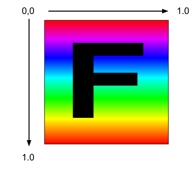
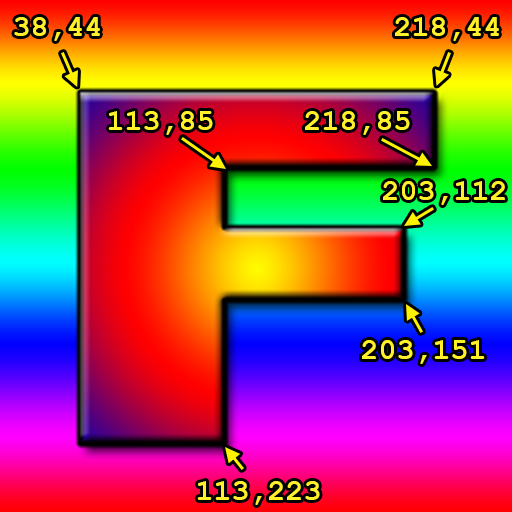
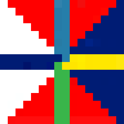
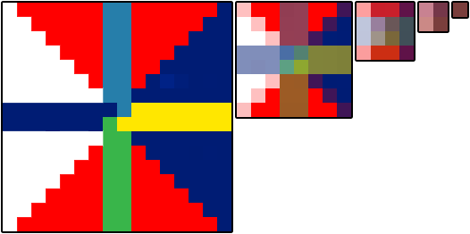
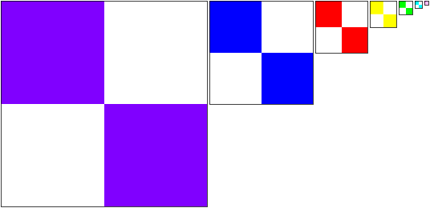

WebGL2 Textures
Cet article est la suite d’une série d’articles sur WebGL. Le premier a commencé par les bases et le précédent portait sur l’animation.
Comment appliquons-nous des textures dans WebGL ? Vous pourriez probablement déduire comment en lisant les articles sur le traitement d’images mais il sera probablement plus facile à comprendre si nous le voyons plus en détail.
La première chose que nous devons faire est d’ajuster nos shaders pour utiliser des textures. Voici les changements au vertex shader. Nous devons passer les coordonnées de texture. Dans ce cas, nous les passons directement au fragment shader.
#version 300 es
in vec4 a_position;
*in vec2 a_texcoord;
uniform mat4 u_matrix;
+// un varying pour passer les coordonnées de texture au fragment shader
+out vec2 v_texcoord;
void main() {
// Multiplier la position par la matrice.
gl_Position = u_matrix * a_position;
+ // Passer la texcoord au fragment shader.
+ v_texcoord = a_texcoord;
}
Dans le fragment shader, nous déclarons un uniform sampler2D qui nous permet de référencer
une texture. Nous utilisons les coordonnées de texture passées depuis le vertex shader
et nous appelons texture pour obtenir une couleur de cette texture.
#version 300 es
precision highp float;
// Passé depuis le vertex shader.
*in vec2 v_texcoord;
*// La texture.
*uniform sampler2D u_texture;
out vec4 outColor;
void main() {
* outColor = texture(u_texture, v_texcoord);
}
Nous devons configurer les coordonnées de texture
// rechercher où les données de sommets doivent aller.
var positionAttributeLocation = gl.getAttribLocation(program, "a_position");
*var texcoordAttributeLocation = gl.getAttribLocation(program, "a_texcoord");
...
*// créer le buffer de texcoord, en faire le ARRAY_BUFFER courant
*// et y copier les valeurs de texcoord
*var texcoordBuffer = gl.createBuffer();
*gl.bindBuffer(gl.ARRAY_BUFFER, texcoordBuffer);
*setTexcoords(gl);
*
*// Activer l'attribut
*gl.enableVertexAttribArray(texcoordAttributeLocation);
*
*// Indiquer à l'attribut comment obtenir les données depuis texcoordBuffer (ARRAY_BUFFER)
*var size = 2; // 2 composantes par itération
*var type = gl.FLOAT; // les données sont des valeurs flottantes 32 bits
*var normalize = true; // convertir de 0-255 à 0.0-1.0
*var stride = 0; // 0 = avancer de size * sizeof(type) à chaque itération pour la texcoord suivante
*var offset = 0; // commencer au début du buffer
*gl.vertexAttribPointer(
* texcoordAttributeLocation, size, type, normalize, stride, offset);
Et vous pouvez voir les coordonnées que nous utilisons qui mappent la texture entière sur chaque quad de notre ‘F’.
*// Remplir le buffer avec les coordonnées de texture pour le F.
*function setTexcoords(gl) {
* gl.bufferData(
* gl.ARRAY_BUFFER,
* new Float32Array([
* // colonne de gauche avant
* 0, 0,
* 0, 1,
* 1, 0,
* 0, 1,
* 1, 1,
* 1, 0,
*
* // traverse du haut avant
* 0, 0,
* 0, 1,
* 1, 0,
* 0, 1,
* 1, 1,
* 1, 0,
* ...
* ]),
* gl.STATIC_DRAW);
Nous avons aussi besoin d’une texture. Nous pourrions en créer une de toutes pièces, mais dans ce cas chargeons une image car c’est probablement la façon la plus courante.
Voici l’image que nous allons utiliser

Quelle image passionnante ! En fait, une image avec un ‘F’ a une direction claire donc il est facile de voir si elle est tournée ou retournée quand nous l’utilisons comme texture.
Le fait de charger une image se produit de manière asynchrone. Nous demandons que l’image soit chargée mais le navigateur met un certain temps à la télécharger. Il y a généralement 2 solutions à cela. Nous pourrions faire attendre le code jusqu’à ce que la texture soit téléchargée et seulement alors commencer à dessiner. L’autre solution est de créer une texture fictive à utiliser jusqu’à ce que l’image soit téléchargée. De cette façon, nous pouvons commencer à faire le rendu immédiatement. Ensuite, une fois que l’image a été téléchargée, nous copions l’image dans la texture. Nous utiliserons cette méthode ci-dessous.
*// Créer une texture.
*var texture = gl.createTexture();
*gl.bindTexture(gl.TEXTURE_2D, texture);
*
*// Remplir la texture avec un pixel bleu 1x1.
*gl.texImage2D(gl.TEXTURE_2D, 0, gl.RGBA, 1, 1, 0, gl.RGBA, gl.UNSIGNED_BYTE,
* new Uint8Array([0, 0, 255, 255]));
*
*// Charger une image de manière asynchrone
*var image = new Image();
*image.src = "resources/f-texture.png";
*image.addEventListener('load', function() {
* // Maintenant que l'image est chargée, la copier dans la texture.
* gl.bindTexture(gl.TEXTURE_2D, texture);
* gl.texImage2D(gl.TEXTURE_2D, 0, gl.RGBA, gl.RGBA, gl.UNSIGNED_BYTE, image);
* gl.generateMipmap(gl.TEXTURE_2D);
*});
Et voilà le résultat
Et si nous voulions n’utiliser qu’une partie de la texture sur la face avant du ‘F’ ? Les textures sont référencées avec des “coordonnées de texture” et les coordonnées de texture vont de 0.0 à 1.0 de gauche à droite à travers la texture et de 0.0 à 1.0 depuis le premier pixel de la première ligne jusqu’au dernier pixel de la dernière ligne. Remarquez que je n’ai pas dit haut ou bas. Le haut et le bas n’ont aucun sens dans l’espace texture car jusqu’à ce que vous dessiniez quelque chose et l’orientiez, il n’y a pas de haut et de bas. Ce qui compte, c’est que vous fournissiez des données de texture à WebGL. Le début de ces données commence à la coordonnée de texture 0,0 et la fin de ces données est à 1,1

J’ai chargé la texture dans Photoshop et j’ai cherché les diverses coordonnées en pixels.

Pour convertir des coordonnées de pixel en coordonnées de texture, nous pouvons utiliser
texcoordX = pixelCoordX / (width - 1)
texcoordY = pixelCoordY / (height - 1)
Voici les coordonnées de texture pour la face avant.
// colonne de gauche avant
38 / 255, 44 / 255,
38 / 255, 223 / 255,
113 / 255, 44 / 255,
38 / 255, 223 / 255,
113 / 255, 223 / 255,
113 / 255, 44 / 255,
// traverse du haut avant
113 / 255, 44 / 255,
113 / 255, 85 / 255,
218 / 255, 44 / 255,
113 / 255, 85 / 255,
218 / 255, 85 / 255,
218 / 255, 44 / 255,
// traverse du milieu avant
113 / 255, 112 / 255,
113 / 255, 151 / 255,
203 / 255, 112 / 255,
113 / 255, 151 / 255,
203 / 255, 151 / 255,
203 / 255, 112 / 255,
J’ai également utilisé des coordonnées de texture similaires pour l’arrière. Et voilà le résultat.
Ce n’est pas un affichage très excitant, mais cela démontre comment utiliser les coordonnées de texture. Si vous créez de la géométrie dans du code (cubes, sphères, etc.), il est généralement assez facile de calculer les coordonnées de texture que vous voulez. D’un autre côté, si vous obtenez des modèles 3D depuis des logiciels de modélisation 3D comme Blender, Maya, 3D Studio Max, alors vos artistes (ou vous) devront ajuster les coordonnées de texture dans ces packages en utilisant un éditeur UV.
Alors que se passe-t-il si nous utilisons des coordonnées de texture en dehors de la plage 0.0 à 1.0 ? Par défaut, WebGL répète la texture. 0.0 à 1.0 est une ‘copie’ de la texture. 1.0 à 2.0 est une autre copie. Même -4.0 à -3.0 est encore une autre copie. Affichons un plan en utilisant ces coordonnées de texture.
-3, -1,
2, -1,
-3, 4,
-3, 4,
2, -1,
2, 4,
et voilà le résultat
Vous pouvez dire à WebGL de ne pas répéter la texture dans une certaine direction en utilisant CLAMP_TO_EDGE. Par exemple
gl.texParameteri(gl.TEXTURE_2D, gl.TEXTURE_WRAP_S, gl.CLAMP_TO_EDGE);
gl.texParameteri(gl.TEXTURE_2D, gl.TEXTURE_WRAP_T, gl.CLAMP_TO_EDGE);
vous pouvez aussi dire à WebGL de mettre en miroir la texture quand elle se répète avec gl.MIRRORED_REPEAT.
Cliquez sur les boutons dans l’exemple ci-dessus pour voir la différence.
Vous avez peut-être remarqué un appel à gl.generateMipmap quand nous avons chargé la texture. À quoi sert-il ?
Imaginez que nous avions cette texture de 16x16 pixels.

Imaginez maintenant que nous ayons essayé de dessiner cette texture sur un polygone de 2x2 pixels à l’écran. Quelles couleurs devrions-nous faire avec ces 4 pixels ? Il y a 256 pixels parmi lesquels choisir. Dans Photoshop, si vous redimensionniez une image de 16x16 pixels à 2x2, elle ferait la moyenne des 8x8 pixels dans chaque coin pour créer les 4 pixels dans une image 2x2. Malheureusement, lire 64 pixels et les moyenner tous ensemble serait beaucoup trop lent pour un GPU. En fait, imaginez si vous aviez une texture de 2048x2048 pixels et que vous essayiez de la dessiner en 2x2 pixels. Pour faire ce que Photoshop fait pour chacun des 4 pixels dans le résultat 2x2, il faudrait moyenner 1024x1024 pixels, soit 1 million de pixels fois 4. C’est bien trop pour être rapide.
Donc ce que le GPU fait, c’est qu’il utilise un mipmap. Un mipmap est une collection d’images progressivement plus petites, chacune faisant 1/4 de la taille de la précédente. Le mipmap pour la texture 16x16 ci-dessus ressemblerait à quelque chose comme cela.

Généralement, chaque niveau plus petit est juste une interpolation bilinéaire du niveau précédent et c’est
ce que fait gl.generateMipmap. Il regarde le plus grand niveau et génère tous les niveaux plus petits pour vous.
Bien sûr, vous pouvez fournir vous-même les niveaux plus petits si vous le souhaitez.
Maintenant, si vous essayez de dessiner cette texture de 16x16 pixels en seulement 2x2 pixels à l’écran, WebGL peut sélectionner le mip qui est 2x2 et qui a déjà été moyenné à partir des mips précédents.
Vous pouvez choisir ce que WebGL fait en définissant le filtrage de texture pour chaque texture. Il y a 6 modes
NEAREST= choisir 1 pixel depuis le plus grand mipLINEAR= choisir 4 pixels depuis le plus grand mip et les mélangerNEAREST_MIPMAP_NEAREST= choisir le meilleur mip, puis choisir un pixel depuis ce mipLINEAR_MIPMAP_NEAREST= choisir le meilleur mip, puis mélanger 4 pixels de ce mipNEAREST_MIPMAP_LINEAR= choisir les 2 meilleurs mips, choisir 1 pixel de chacun, les mélangerLINEAR_MIPMAP_LINEAR= choisir les 2 meilleurs mips, choisir 4 pixels de chacun, les mélanger tous
Vous pouvez voir l’importance des mips dans ces 2 exemples. Le premier montre que si vous utilisez NEAREST
ou LINEAR et ne choisissez que depuis la plus grande image, vous aurez beaucoup de scintillement car quand les choses
bougent, pour chaque pixel dessiné, vous devez choisir un seul pixel de la plus grande image. Cela change selon
la taille et la position et donc parfois il choisira un pixel, d’autres fois un différent, d’où le scintillement.
L’exemple ci-dessus est exagéré pour montrer le problème.
Remarquez à quel point ceux de gauche et du milieu scintillent alors que ceux de droite scintillent moins.
Ceux de droite ont également des couleurs mélangées car ils utilisent les mips. Plus vous dessinez la texture petite, plus WebGL va
choisir des pixels éloignés. C’est pourquoi par exemple celui du bas au milieu, même s’il utilise LINEAR et mélange
4 pixels, scintille avec des couleurs différentes car ces 4 pixels proviennent de coins différents de l’image 16x16 selon lesquels
4 sont choisis, vous obtenez une couleur différente. Celui en bas à droite reste cependant une couleur constante
car il utilise le 2ème plus petit mip.
Ce deuxième exemple montre des polygones qui s’enfoncent loin dans la profondeur.
Les 6 faisceaux entrant dans l’écran utilisent les 6 modes de filtrage listés ci-dessus. Le faisceau en haut à gauche utilise NEAREST
et vous pouvez voir qu’il est clairement très pixelisé. Celui en haut au milieu utilise LINEAR et n’est pas beaucoup mieux.
Celui en haut à droite utilise NEAREST_MIPMAP_NEAREST. Cliquez sur l’image pour passer à une texture où chaque mip est
une couleur différente et vous verrez facilement où il choisit d’utiliser un mip spécifique. Celui en bas à gauche utilise
LINEAR_MIPMAP_NEAREST ce qui signifie qu’il choisit le meilleur mip puis mélange 4 pixels dans ce mip. Vous pouvez toujours voir
une zone claire où il passe d’un mip au mip suivant. Celui du bas au milieu utilise NEAREST_MIPMAP_LINEAR
ce qui signifie choisir les 2 meilleurs mips, choisir un pixel de chacun et les
mélanger. Si vous regardez de près, vous pouvez voir qu’il est encore pixelisé, surtout dans la direction horizontale.
Celui en bas à droite utilise LINEAR_MIPMAP_LINEAR ce qui choisit les 2 meilleurs mips, choisit 4 pixels de chacun,
et mélange les 8 pixels.

Vous pourriez vous demander pourquoi choisiriez-vous jamais autre chose que LINEAR_MIPMAP_LINEAR qui est sans doute
le meilleur. Il y a de nombreuses raisons. L’une est que LINEAR_MIPMAP_LINEAR est le plus lent. Lire 8 pixels
est plus lent que lire 1 pixel. Sur le matériel GPU moderne, ce n’est probablement pas un problème si vous n’utilisez qu’une seule
texture à la fois, mais les jeux modernes peuvent utiliser 2 à 4 textures à la fois. 4 textures * 8 pixels par texture =
besoin de lire 32 pixels pour chaque pixel dessiné. Ce sera lent. Une autre raison est si vous essayez
d’obtenir un certain effet. Par exemple, si vous voulez que quelque chose ait ce look pixelisé rétro, vous voudrez peut-être
utiliser NEAREST. Les mips prennent aussi de la mémoire. En fait ils prennent 33% de mémoire supplémentaire. Cela peut être beaucoup de mémoire
surtout pour une très grande texture comme vous pourriez en utiliser sur un écran titre de jeu. Si vous n’allez jamais
dessiner quelque chose de plus petit que le plus grand mip, pourquoi gaspiller de la mémoire pour les mips plus petits. Utilisez simplement NEAREST
ou LINEAR car ils n’utilisent que le premier mip.
Pour définir le filtrage, appelez gl.texParameter comme ceci
gl.texParameteri(gl.TEXTURE_2D, gl.TEXTURE_MIN_FILTER, gl.LINEAR_MIPMAP_LINEAR);
gl.texParameteri(gl.TEXTURE_2D, gl.TEXTURE_MAG_FILTER, gl.LINEAR);
TEXTURE_MIN_FILTER est le paramètre utilisé quand la taille que vous dessinez est plus petite que le plus grand mip.
TEXTURE_MAG_FILTER est le paramètre utilisé quand la taille que vous dessinez est plus grande que le plus grand mip. Pour
TEXTURE_MAG_FILTER, seuls NEAREST et LINEAR sont des paramètres valides.
Une chose à savoir : WebGL2 requiert que les textures soient “texture complete” sinon elles ne seront pas rendues. “texture complete” signifie soit que
-
Vous avez réglé le filtrage pour n’utiliser que le premier niveau de mip, ce qui signifie régler le
TEXTURE_MIN_FILTERsurLINEARouNEAREST. -
Si vous utilisez des mips, ils doivent être de la bonne taille et vous devez en fournir TOUS jusqu’à la taille 1x1.
La façon la plus simple de le faire est d’appeler gl.generateMipmap. Sinon, si vous fournissez vos propres mips, vous devez les fournir
tous ou vous obtiendrez une erreur.
Une question courante est “Comment puis-je appliquer une image différente sur chaque face d’un cube ?”. Par exemple, disons que nous avions ces 6 images.
 |  |
 |  |
 |
3 réponses viennent à l’esprit
-
créer un shader compliqué qui référence 6 textures et passer des informations supplémentaires par sommet dans le vertex shader qui sont passées au fragment shader pour décider quelle texture utiliser. NE FAITES PAS CELA ! Un peu de réflexion rendrait clair que vous finiriez par écrire des tonnes de shaders différents si vous vouliez faire la même chose pour des formes différentes avec plus de côtés etc.
-
dessiner 6 plans au lieu d’un cube. C’est une solution courante. Ce n’est pas mauvais mais ça ne fonctionne vraiment que pour de petites formes comme un cube. Si vous aviez une sphère avec 1000 quads et que vous vouliez mettre une texture différente sur chaque quad, vous devriez dessiner 1000 plans et ce serait lent.
-
La, j’ose dire, meilleure solution est de mettre toutes les images dans 1 texture et d’utiliser les coordonnées de texture pour mapper une partie différente de la texture sur chaque face du cube. C’est la technique que pratiquement toutes les applications haute performance (comprenez les jeux) utilisent. Ainsi, par exemple, nous mettrions toutes les images dans une texture peut-être comme ceci
puis utiliser un ensemble différent de coordonnées de texture pour chaque face du cube.
// sélectionner l'image en haut à gauche
0 , 0 ,
0 , 0.5,
0.25, 0 ,
0 , 0.5,
0.25, 0.5,
0.25, 0 ,
// sélectionner l'image en haut au milieu
0.25, 0 ,
0.5 , 0 ,
0.25, 0.5,
0.25, 0.5,
0.5 , 0 ,
0.5 , 0.5,
// sélectionner l'image en haut à droite
0.5 , 0 ,
0.5 , 0.5,
0.75, 0 ,
0.5 , 0.5,
0.75, 0.5,
0.75, 0 ,
// sélectionner l'image en bas à gauche
0 , 0.5,
0.25, 0.5,
0 , 1 ,
0 , 1 ,
0.25, 0.5,
0.25, 1 ,
// sélectionner l'image en bas au milieu
0.25, 0.5,
0.25, 1 ,
0.5 , 0.5,
0.25, 1 ,
0.5 , 1 ,
0.5 , 0.5,
// sélectionner l'image en bas à droite
0.5 , 0.5,
0.75, 0.5,
0.5 , 1 ,
0.5 , 1 ,
0.75, 0.5,
0.75, 1 ,
Et nous obtenons
Ce style d’application de plusieurs images en utilisant 1 texture s’appelle souvent un atlas de textures. C’est la meilleure solution car il n’y a qu’une texture à charger, le shader reste simple car il ne doit référencer qu’une texture, et il ne nécessite qu’un seul appel de dessin pour dessiner la forme au lieu d’un appel de dessin par texture si nous la découpions en plans.
Quelques autres choses très importantes que vous voudrez peut-être savoir sur les textures. L’une est comment fonctionne l’état des unités de texture. Une autre est comment utiliser 2 textures ou plus à la fois. L’autre est comment utiliser des images d’autres domaines.
La suite : commençons à simplifier avec moins de code et plus de plaisir.